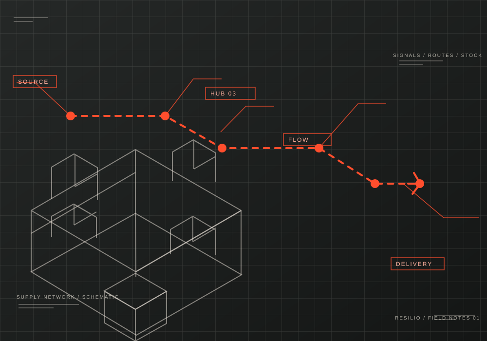
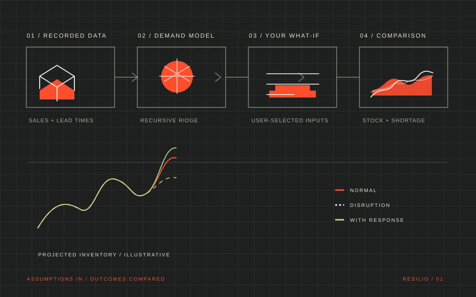

A / DEMAND PULSE
UNITS SOLD / MONTHRecorded sales through the year
Waiting for the local data service…
365-day dataset windowRecorded sales
SEE THE SIGNAL. TEST THE WHAT-IF.
A visual planner for demand, inventory exposure, and the supply disruptions you choose to explore.
↓SYNTHETIC DEMONSTRATION DATA · NOT A LIVE ALERT SYSTEM

THE RESILIO IDEA
Forecasts estimate ordinary demand. The simulator explores “what if” events. Each view makes clear what comes from the dataset and what you chose as an assumption.
01 / READ THE DATA
Start with the signals inside the demo dataset. These charts describe recorded values; they do not establish how a real supply chain behaves.
02 / LOOK AHEAD
A recursive Ridge model uses past recorded sales to project the next two weeks. It does not account for promotions or predict disruptions.
Lower MAE means smaller average error in this synthetic test period.
Evaluation values come from the audited synthetic demo data. They are not evidence of real-world accuracy.
03 / TEST A WHAT-IF
Choose a disruption, then compare its effect with a possible preparation. Resilio calculates scenarios; it does not predict that an event will happen.
Shortage days
—Unmet demand
—Ending stock
—Scenario settings are chosen by you. The lines are model outputs under those assumptions, not alerts or real-world predictions.

04 / KNOW WHAT YOU’RE SEEING
Resilio uses a synthetic Kaggle dataset to demonstrate analytics and demand forecasting. The historical inventory balance ignores listed lead times, so the simulator starts from values you enter and applies its own visible rules.